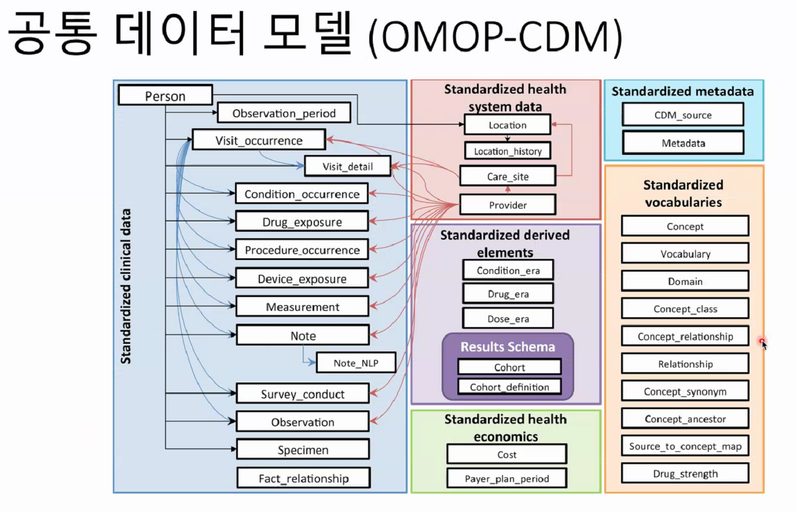
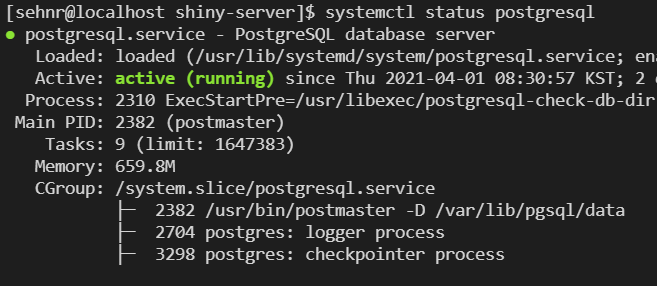

Chapter 7 DataBase in R and SQL basic
유승찬 (2021-03-31) and 윤진하 (2021-04-05)
7.1 데이터 베이스와 데이터 베이스 시스템
author: 유승찬 데이터베이스 (DataBase)
데이터 저장 구조 는 아래처럼 구분해 볼 수 있습니다. 우리가 이번시간에 다루는 것은 논리적 구조에 관한 것입니다.
| 논리적 구조 | 물리적 구조 |
|---|---|
| 사용자 관점에서 데이터베이스의 논리적 구조 | 전자기적 저장장치(Disc)에 물리적으로 저장되는 데이터 구조 |
| 동일한 의미를 가진 데이터 집합관 표현된 데이터 구조 | 전자기적 저장장치에 기록, 저장되는 데이터 구조로 물리적 배치를 표현 |
- 데이터베이스
- 체계화된 데이터 모임
- 작성된 목록으로써 여러 응용 시스템들의 통합된 정보들을 저장하여 운영할 수 있는 공용 데이터 묶음
- 데이터베이스의 특징
- 실시간 접근성
- 지속적인 변화
- 동시 공유
- 내용에 의한 참조
- 데이터베이스의 개념
- 통합된 데이터(intergrated data)
- 다중 유저, 통합관리, 중복 최소화
- 저장
- 운용
- 시스템
- 통합된 데이터(intergrated data)
- 데이터베이스관리 시스템
- DBMS(DB management system)
- DBMS 기능
- 정의: 데이터에 대한 형식, 구조, 제약조건들을 명세
- 구축:DBMS가 관리하는 기억 장체 데이터를 저장
- 조작:질의, 갱신, 보고서
- 공유: 여러사람
- 보호
- 유지 보수
데이터베이스의 특성
| 특성 | 파일시스템 | 데이터베이스 시스템 |
|---|---|---|
| 데이터에 대한 접근 | 물리적 접근 | 물리적&논리적 접근 |
| 동시 사용 | 동일한 파일을 두개 이상의 프로그램이 동시에 접근할 수 없음 | 동일한 데이터를 다수 사용자가 동시에 접근 가능 |
| 구조화 및 중복성 | 비구조적, 중복성과 유지보수 비용 높음 | 구조화 되어 있음. 중복성과 유지보수 비용 낮음 |
| 데이터 공유 | 특정 프로그램만 접근 | 접근 권이이 있는 모든 프로그램이 공유 |
| 데이터 접근 | 미리 작성된 프로그램을 통해서만 | 다양한 질의어를 이용하요 융통성 있는 접근 |
| 통합성 | 각 응용프로그램마다 파일에 따로 존재 | 데이터가 중복을 배제하면서 통합되어 있음 |
파일 시스템과 데이터 베이스 시스템 차이
하번 생각해보세요
| 데이터베이스 장점 |
|---|
| 중복과 불일치 감소 |
| 시스템 융통성 |
| 시스템 개발 및 유지 비용 감소 |
| 표준화 시행이 용이 |
| 보안이 향상됨 |
| 데이터 무결성이 향상됨 |
| 조직체의 요구 사항을 파악하여 조정 가능 |
| 시스템의 고장으로 데이터 베이스 복구 가능 |
| DB 공유와 업그레이드 쉬음 |
7.2 관계형 데이터베이스
본 수업에서 주로 관계형 데이터 다룸 ;

관계형 데이터의 구조
| SQL term | Relational database term | Description |
|---|---|---|
| Row | Tuple or record | A data set representing a single item |
| Column | Attribute or field | A labeled element of a tuple, e.g. “Address” or “Date of birth” |
| Table | Relation or Base relvar | A set of tuples sharing the same attributes; a set of columns and rows |
| View or result set | Derived relvar | Any set of tuples; a data report from the RDBMS in response to a query |
- 스키마
- 릴레이션의 기본적 구조, 테이블을 디자인하기 위한 청사진
- 튜플
- 각각의 행
- 속성의 모임
- 속성
- 가장 작은 논리적 단위
- 도메인
- 속성이 가질수 있는 값의 집합
대부분 key를 갖고 있다. rownumber()는 항상 변하니 key가 중요.
>유일하면서 null 이 없어야 primay key
>외래키: 다른 릴레이션의 기본 키를 참조하는 애트리뷰트
아래 관계형 데이터가 있습니다. key 는 무엇일 까요?
if(!require(ReDaMoR)) install.packages('ReDaMoR')
library(ReDaMoR)
hpo_model <- read_json_data_model(
system.file("examples/HPO-model.json", package="ReDaMoR")
)
plot(hpo_model)7.3 SQL (Structured Query Language)
IBM에서 개발 1972년부터 사용 세계 3대 coding language (1위 python, 2위 R, 3위 sql in kaggle) DataScience 할때 주로 상기 3개 언어를 사용한다고 함.
- 3 function
- 데이터 정의어
- 데이터 저장 구종, 데이터 접근 방법, 데이터 형식 등 데이터베이스를 구추갛거나 수정
- SCHEMA, DOMAIN, TABLE, VIEW, INDEX
- 데이터 조작어
- SELECT, INSERT, UPDATE ,DELETE
- 데이터 제어어
- commit, rollback, grant, revoke
- 데이터 정의어

sql example
sql cheat sheet 참조
7.3.1 R and DBI
R에서 DB를 사용하기 위해서, DBI 를 설치하고 이후 Rposgres 등 DBMS 페키지를 사용함.

R and DB 1
실습 자료는 OMOP-CDM 자료를 사용
 download R script from github in terminal
$ https://github.com/dr-you-group/OmopCdmExercise.git7.4 R PostgreSQL 실습
참고 동영상
오픈 소스이면서 호환성이 높음. 1위) Oracle, 2위) MySQL 3위) Microsoft SQL, 4위) PostgreSQL 임.
이번 시간에는 PostgreSQL 설치 방법, DB 파일 생성과 활용에 대해서 실습해 보겠습니다. 최종 적으로는 간단한 DB 파일을 읽어 오는 것을 목표로 하겠습니다.
7.4.1 PostgreSQL 설치
터미널에서 실행하게 됩니다. 한줄씩 실행해 주십시오. sudo apt-get install unixodbc-dev 에서만 오류가 나지 않으면 됩니다. 아래의 파일은 JAVA 설치 및 경로 지정, 그리고 ODBC 설치 과정입니다. ODBC를 설치하여 어떠한 프로그램이든지 쉽게 DB에 접근하고 명령문(커리)을 작성하여 DB를 가져오기 쉽게표준 번역 같은 기능을 제공한다고 생각할 수 있습니다. 이후 PostgreSQL을 사용하기 위해 설치 준비중이라고 볼 수 있습니다. JAVA는 향후 JDBC 사용이 필요한 경우를 위해 미리 설치하는 것입니다. 만약 오류가 난다면 이번 실습을 위해서는 넘어가도 되겠습니다.
java -version
sudo -s
sudo apt-get update
sudo apt-get upgrade
sudo apt-get install -y default-jre
sudo apt-get install -y default-jdk
sudo R CMD javareconf
sudo apt-get install unixodbc-dev
sudo reboot컴퓨터가 꺼졌다 다시 켜질 것 입니다. reboot. 시간이 좀 지나면 다시 Terminal에 명령어가 켜질 것입니다.
이후 Terminal 에서
postgreSQL과 관련있는 페키지를 설치합니다. 또한 ODBC와 PostgreSQL을 같이 사용하기 위한 페키지를 설치합니다.
sudo apt-get -y install postgresql postgresql-contrib
sudo apt-get install odbc-postgresql
systemctl status postgresql아래와 같은 화면이 출력되면 정상입니다. 
현재 postgres 라는 계정이 자동 생성되어 있고 이것이, 관리자 계정입니다. 로그인 해보자!
sudo -i -u postgres
psql
postgres=# \password postgres
postgres=# dspub2021
postgres=# \q
usermod -aG sudo postgres
passwd postgres
systemctl status postgresql이제 몇가지 설정을 진행하도록 하겠습니다. 외부에서도 접속할 수 있도록 listen_addresses = '*' 와 host all all 0.0.0.0/0 md5를 해보도록 하겠습니다. 이후 restart 하겠습니다.
cd /etc/postgresql/12/main
vi postgresql.conf
>>>> 여기 고쳐 주세요 listen_addresses = '*'
>>>> :wq! 로 나오기
vi pg_hba.conf
>>>>> 여기 고쳐 주세요 host all all 0.0.0.0/0 md5
>>>> :wq! 로 나오기
systemctl restart postgresql
sudo apt install firewalld
sudo firewall-cmd --zone=public --permanent --add-port=5432/tcp
sudo firewall-cmd --reload만약 방화벽 설정이 않된다면, GCP 처음 설치 강좌에서 수동으로 방화벽 설정했던 곳에 prt 5432를 추가해줍니다.
방화벽 5432
이제 ocdm DB를 생성해 보겠습니다. open_cdm 이라는 유저에 ocdm이라는 DB를 설정한다는 것입니다.
sudo -i -u postgres psql
> create user open_cdm;
> alter user open_cdm with password 'j2data2020';
> create database ocdm with owner open_cdm encoding 'UTF8' template template0;
>/q접속해 보겠습니다.
ifconfig
psql -h localhost -U open_cdm -d ocdm처음부터 모든 DB를 만드는 것은 시간이 오래 걸리므로 이번 시간에는 만들어진 DB를 가져와보겠습니다. DsPub 기본 수업에서 사용했던 온도 자료와 사망자료를 DB로 만든 DB: ocdm 를 사용하겠습니다. pg_dump [IP of dspub.org] open_cdm ocdm > all.sql 에서 [IP of dspub.org] 는 192.168.0.2 처럼 IP 주소를 의미합니다.
su dspub
sudo -s
cd /home/dspub/download
pg_dump -C -h 34.64.152.186 -U open_cdm ocdm > all.sql꽤 시간이 지나면 dspub.org 에 있는 DB가 all.sql형식으로 다운로드 된 것을 볼 수 있습니다.
ls
su postgres
psql -f all.sql ocdm7.4.2 R 로 DB 확인
아래 명령문을 이용하여 R 에서 DB를 확인해 보겠습니다.
#if(!require(rJava)) install.packages('rJava');library(rJava)
if(!require(DBI)) install.packages('DBI'); library(DBI)
if(!require(odbc)) install.packages('odbc'); library(odbc)
odbc::odbcListDrivers()
con <- DBI::dbConnect(odbc::odbc(),
Driver = "PostgreSQL",
Server = "localhost",
Database = "ocdm",
UID = "open_cdm",
PWD = "j2data2020",
#UID = rstudioapi::askForPassword("Database user"),
#PWD = rstudioapi::askForPassword("Database password"),
Port = 5432)## Connecting using PostgreSQL driver7.4.2.1 R SQL example
몇가지 실습을 해보도록 하겠습니다. 오늘은 딱 3가지 명령문을 사용하도록 하겠습니다.
| 명령문 | 내용 |
|---|---|
| dbGetQuery | DB에서 파일 불러오기 |
| dbSendStatement | PostgreSQL Schema, Table 관리 |
| dbWriteTable | DB에 Table 적제 |
if(!require(DBI)) install.packages('DBI'); library(DBI)
if(!require(odbc)) install.packages('odbc'); library(odbc)
if(!require(tidyverse)) install.packages('tidyverse');library(tidyverse)
odbc::odbcListDrivers()
con <- DBI::dbConnect(odbc::odbc(),
Driver = "PostgreSQL Unicode",
Server = "localhost",
Database = "ocdm",
UID = rstudioapi::askForPassword("Database user"),
PWD = rstudioapi::askForPassword("Database password"),
Port = 5432)
## sql: dbGetQuery, dbSendStatement, dbWriteTable
### dbGetQuery
test <- dbGetQuery(con, "SELECT * from kosis.death LIMIT 10")
lkup <- dbGetQuery(con, "SELECT * from kosis.death_region_lkup")
View(lkup)
dbSendStatement(con, "drop table if exists kosis.death_region_lkup")
dbWriteTable(con, SQL("kosis.death_region_lkup"), value = lkup)
dbSendStatement(con, "drop schema if exists kosis cascade")
dbSendStatement(con, "drop schema if exists wanhyung cascade")
## new kosis
death_dic = read_csv("death_dic.csv")
death2019 = read_csv("death2019.csv")
dbSendStatement(con, "create schema death")
dbWriteTable(con, SQL("death.death_dic"), value = death_dic)
dbWriteTable(con, SQL("death.death2019"), value = death2019)